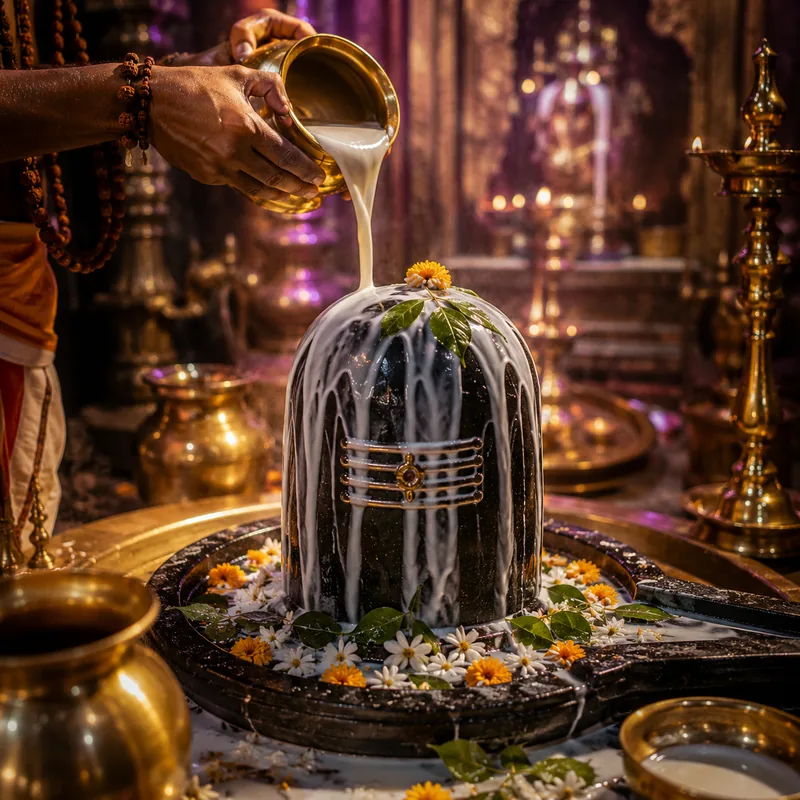
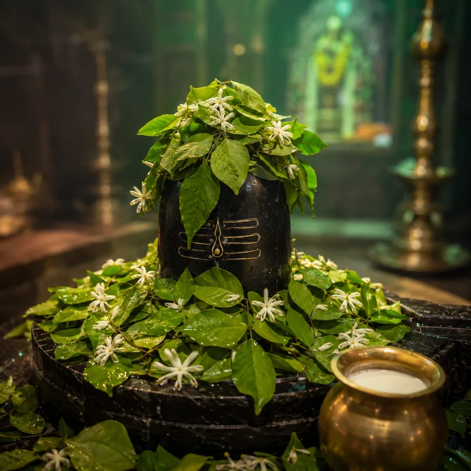
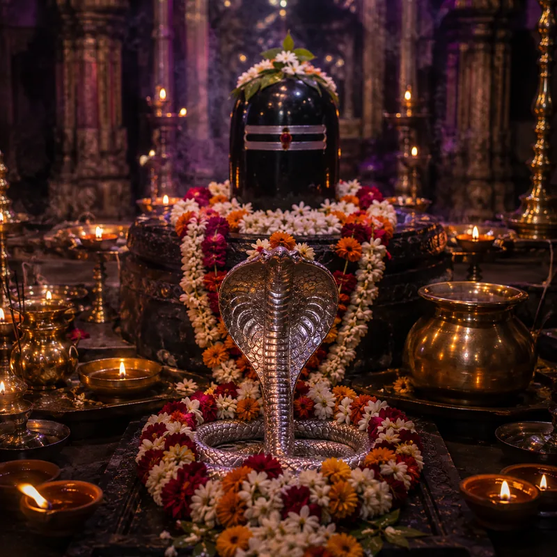
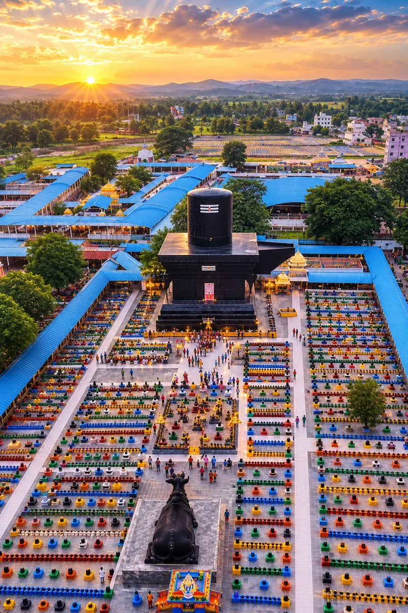
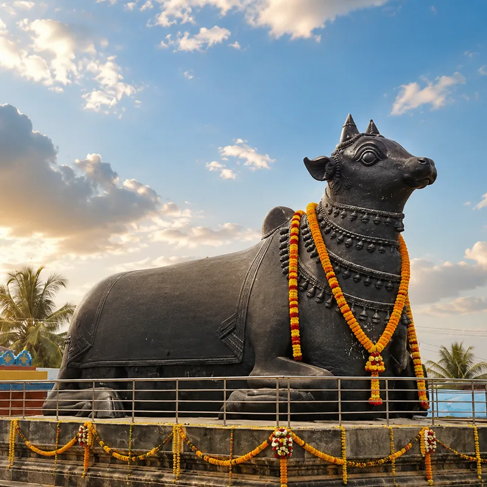

Sawan Vishesh Kotilingeshwara Maha Rudrabhishekam & Bilva Arpan
Seek Lord Shiva's supreme protection and divine blessings for health, prosperity, and career on the holy occasion of Sawan Somvar.
About the Puja
On 17 August 2026, a rare and powerful alignment occurs — Sawan Somvar (the most sacred Monday of Shravan, beloved of Lord Shiva) falls together with Nag Panchami, the day dedicated to the serpent deities and the dissolution of Kaal Sarp Dosh. Performing the Maha Rudrabhishekam & Bilva Arpan on this confluence is considered exceptionally auspicious for the whole family.
Kaal Sarp & Rahu–Ketu Relief
Removal of Kaal Sarp Dosh and family Rahu–Ketu obstacles that block progress and peace.
Health, Vitality & Long Life
Blessings of well-being, strength and longevity for every member of your household.
Career, Debt Relief & Abundance
Growth in career and business, freedom from debt, and lasting financial abundance.
Select Your Puja Package
Choose the Sankalp that fits your family. All packages include your personalised Sankalp and video delivery.
How It Works · 8 Simple Steps
What Your Sankalp Includes

Maha Rudrabhishekam
The supreme abhishek of Lord Shiva with the sacred Panchamrit — milk, curd, ghee, honey and sugar — accompanied by continuous Rudram chanting.
- Panchamrit bath & Rudram recitation by temple priests
- Your name & gotra chanted in the Sankalp
- Blessings of health, protection and prosperity

108 Bilva Arpan
The offering of 108 sacred Bilva (Bel) leaves, most dear to Lord Shiva, invoking deep peace, healing and harmony for you and your family.
- 108 Bel Patra offered in your name
- Special Doodh (milk) abhishek during the seva
- For health, mental peace and family well-being

Nag Panchami · Kaal Sarp Shanti
On the rare Nag Panchami confluence, special rites are performed to pacify the serpent deities and dissolve Kaal Sarp Dosh and Rahu–Ketu afflictions.
- Naga worship & Kaal Sarp Shanti rituals
- Removal of planetary hurdles blocking progress
- Relief from delays in career, marriage & finances
Kotilingeshwara Temple, Kolar
Where a crore of Shiva Lingams stand
Nestled in Kammasandra, Kolar district of Karnataka, Kotilingeshwara is home to the world's largest 108-ft Shiva Lingam, watched over by a towering 11-metre Nandi. Around them rise millions of individually installed Shiva Lingams — a living ocean of devotion built over decades.
Devotees from across India offer Rudrabhishekam here to seek Lord Shiva's grace for health, harmony and the removal of doshas. Your Sawan Somvar Sankalp joins this sacred tradition.

108-ft Maha Shiva Lingam
The Giant NandiLoved by Devotees Across India
Frequently Asked Questions
Why should I perform this Puja through Ritham?
Ritham partners with verified priests at Kotilingeshwara Temple to perform your Sankalp authentically on your behalf. You get a personalised Sankalp in your name & gotra, a full video of the ritual on WhatsApp, and — on eligible packages — sacred prasad delivered to your home, all without travelling.
What if I do not know my Gotra?
No problem. In the Sankalp form, simply tick "I do not know my Gotra". It is traditionally considered Kashyap, because Maharishi Kashyap is the ancestral sage whose lineage encompasses all. The priest will recite Kashyap Gotra during your Sankalp.
Will my name and Gotra be chanted during the Sankalp?
Yes. Every devotee name you provide, along with your gotra, is recited by the temple priests during the Sankalp at the time of the Maha Rudrabhishekam on 17 August 2026.
How and when will I get the video proof on WhatsApp?
Your personalised puja video is delivered to the WhatsApp number you provide, typically within 3–4 days after the ceremony. You'll also receive booking and status updates on the same number.
What items are included in the Prasad delivery box?
The Kotilingeshwara Sawan Prasad Box contains Panchmeva, sacred Bhasma, Kolar Temple Jal, and a Panchmukhi Rudraksha. It is included free with the Family (Kutumb Raksha) package and can be added to any package as an offering.
Review Booking & Add Offerings
Enhance your Sankalp with curated seva offerings. Your total updates instantly.
Curated Add-Ons
Optional offerings, hand-picked for the Rudrabhishekam.
Pandit Dakshina
A token of gratitude for the priests performing your Sankalp.
Bill Summary
Har Har Mahadev!
Your Sankalp is Confirmed
Your offering is registered for the Maha Rudrabhishekam. A confirmation has been sent to your WhatsApp. Keep your Devotee Pass handy.
Order Breakdown
What happens next
Temple priests recite your name & gotra during the Abhishek on 17 Aug 2026.
Your personalised puja video arrives within 3–4 days after the ceremony.
If you added home-delivery items, they ship within 5–7 days with tracking.